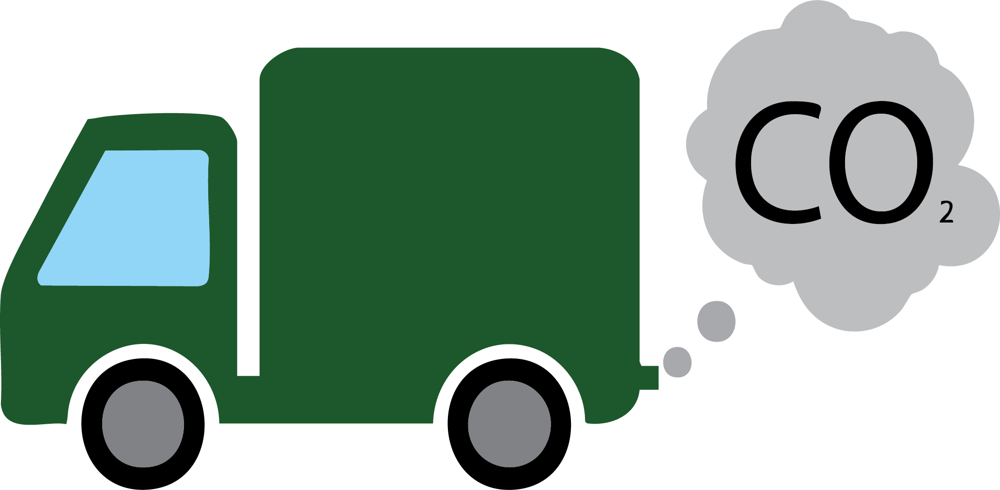
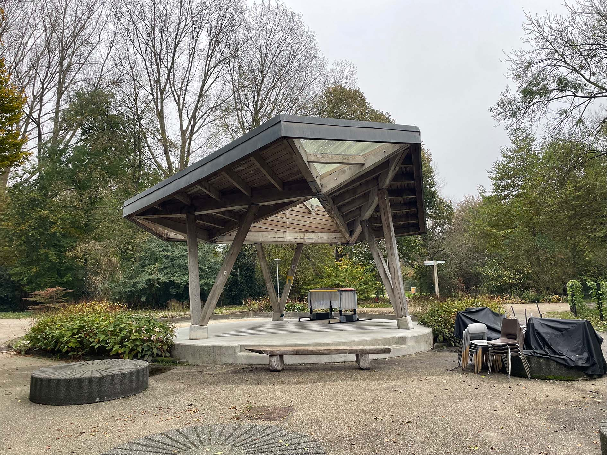
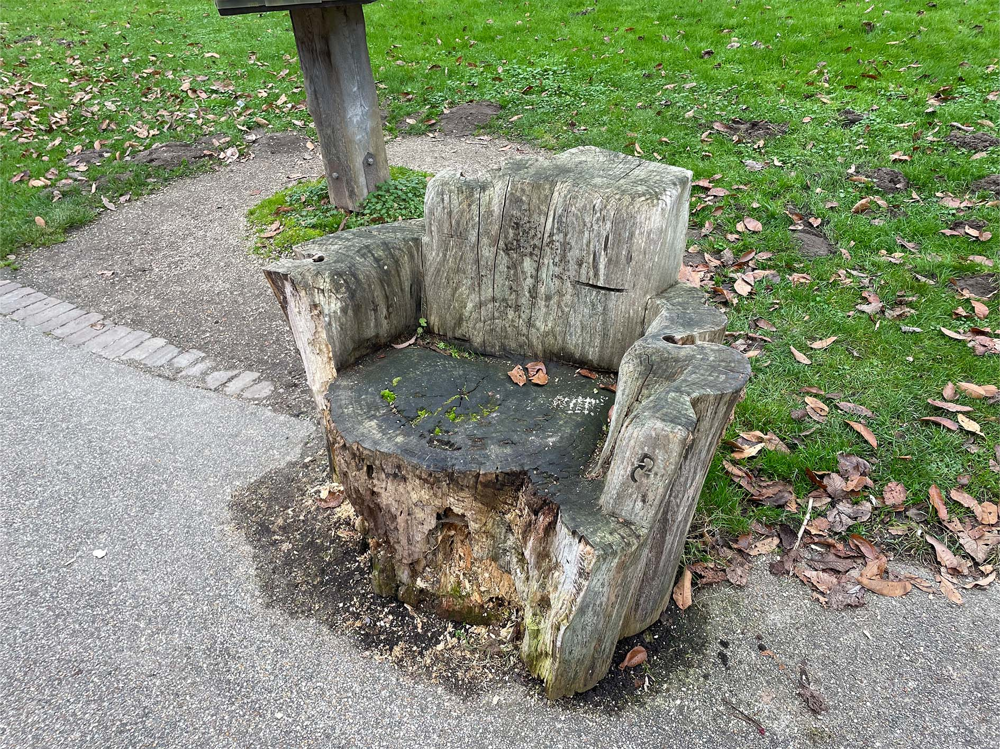
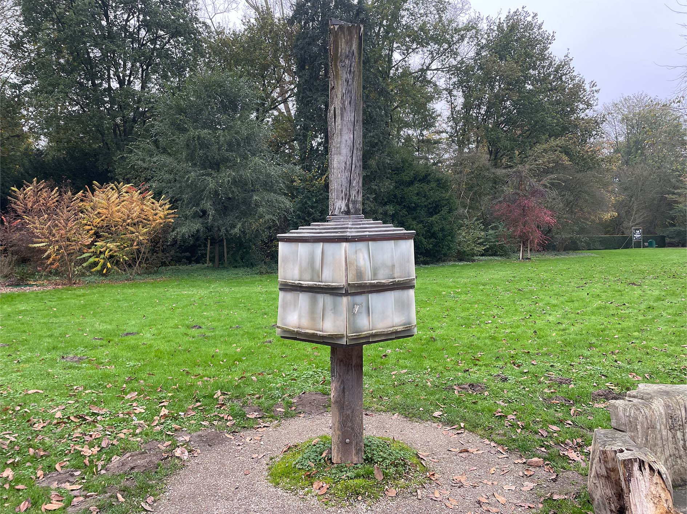
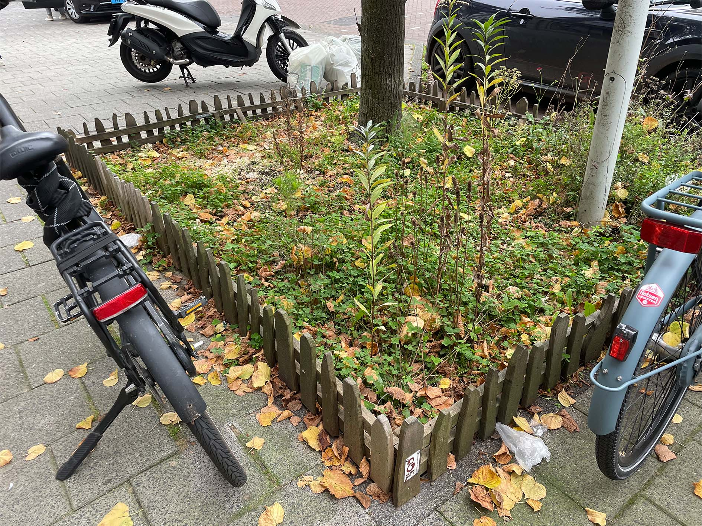
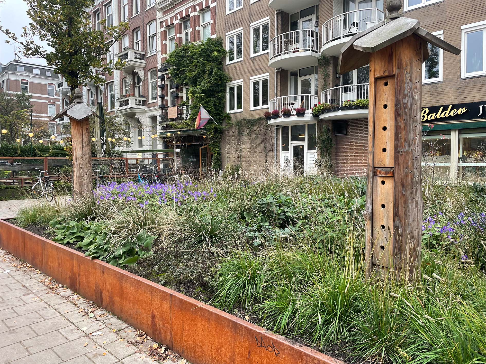
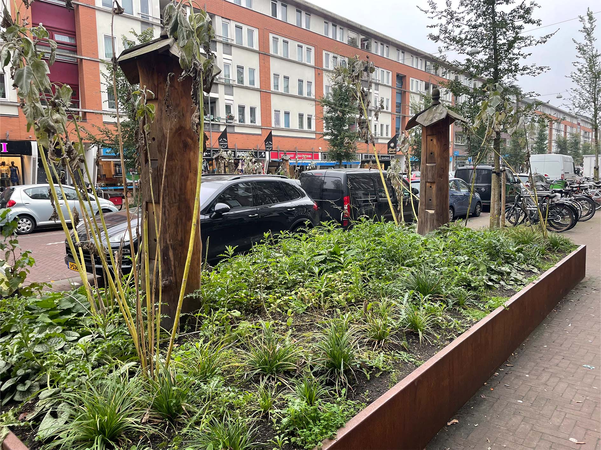

Info
Waarom is Stadshout duurzaam?
Stadshout hergebruikt bomen uit Amsterdam die door ziekte of stedelijke ontwikkeling gekapt moeten worden. In plaats van het hout als afval te behandelen, verwerken ze het lokaal tot duurzame producten. Dit vermindert zowel houtafval als CO2-uitstoot, doordat er minder nieuw hout gekapt en getransporteerd hoeft te worden.
Het hout komt van bomen die door de gemeente worden gekapt of uit particuliere tuinen. Door dit hout te hergebruiken, draagt Stadshout bij aan een duurzame en lokale houtvoorziening. Daarnaast vergroten ze het bewustzijn onder Amsterdammers over het belang van bomen en duurzaamheid.
Projecten






Swipe naar links!